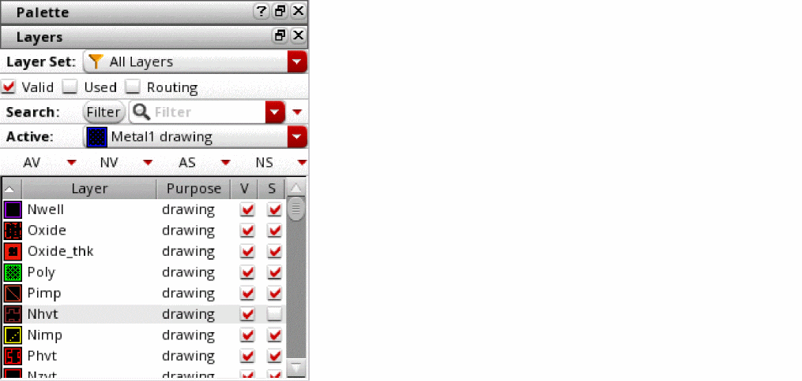

Object Selectability Controls
You can control selectability of objects by using the Layers panel in the Palette assistant and by using the selection protection commands.
The Layers panel lets you control the selectability of all objects on specific layer-purpose pairs. For example, the figure shows that selectability setting of the Nhvt layer-purpose pair is turned off, which implies that its objects are not selectable on the canvas. You can use the S (Selectability) check box and the AS and NS control buttons to define the selectability setting for layer-purpose pairs.

To set individual objects as selectable or unselectable, use the selection protection commands. In Layout Viewer, you can access the commands from the View – Select menu. In Virtuoso Layout Suite XL and higher tiers, you can access the commands from the Edit – Select menu.
The following table describes the commands. These commands work in both pre- and post-selection modes.
|
Command
|
Description
|
|
Set Selection Protection
|
Protects objects from being selected.
|
|
Clear Selection Protection
|
Starts an enter function that removes protection from selected objects. Start this function, then either click or use area selection to specify the objects you want to make selectable again.
The Clear Selection Protection command works in pre-selection mode only when Override Selection Protection is on.
|
|
Clear All Selection Protection
|
Makes all currently protected objects selectable again.
Only the objects that were marked protected by using the Set Selection Protection command are made selectable. The selectability of objects set by using the Layers panel is not affected.
|
|
Selection Protection Options
|
Configures the settings for highlighting the objects that are marked protected. This command opens the Selection Protection Highlight Options form.
|
|
|
Override Selection Protection
|
(Available in Virtuoso Layout Suite XL and higher tiers)
When turned on, enables selection of objects marked protected. In this mode, you can perform basic edit operations on the protected objects.
When turned off, prevents selection of protected objects.
If you turn off this toggle command after selecting a protected object, the protected object is deselected.
|
|
Highlight Protected Objects
|
(Available in Virtuoso Layout Suite XL and higher tiers)
When turned on, displays a halo around objects that are marked protected. This is the default mode.
When turned off, removes the halo around objects that are marked protected.
|
Related Topics
Selection Protection Highlight Options Form
Object Selection
Layers Panel
Return to top